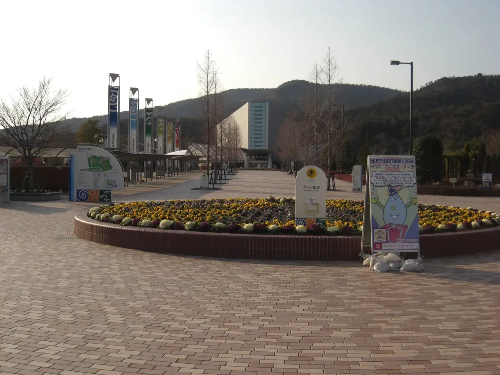
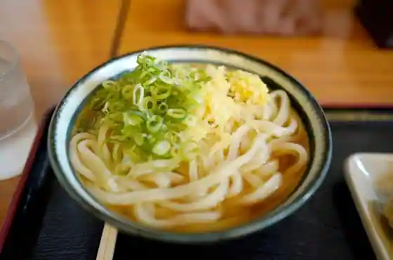
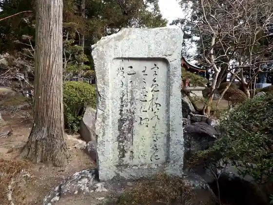
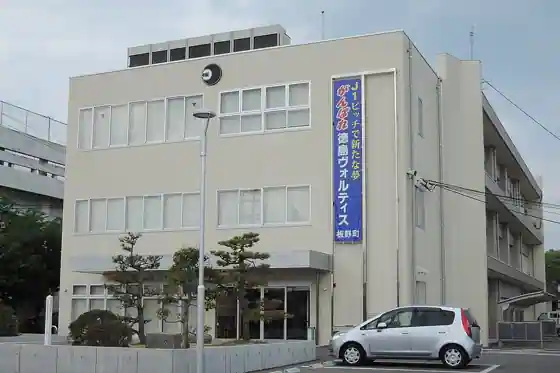

Japan / Tokushima / Itano
Itano · Tokushima
Itano
Highlighted on the Tokushima map.

Itano Town Hall · Tourism site



Sights · Things to do · Places to eat · Places to stay · Day-to-day services
Nearby in Tokushima: ← Ishii · Kaiyo Town →
Other towns: Aizumi Town · Anan City · Awa · Higashimiyoshi · Ishii · Kaiyo Town · Kamiita · Kamikatsu · Kamiyama · Katsuura · Kitajima · Komatsushima · Matsushige · Mima · Minami Town · Miyoshi · Mugi Town · Naka Town · Naruto · Sanagochi Village · Tokushima · Tsurugi · Yoshinogawa
All towns in Tokushima · Back to all prefectures